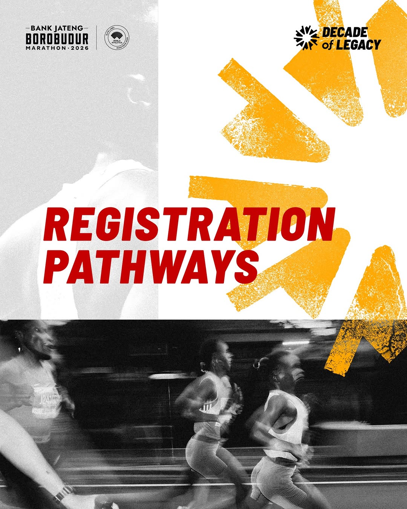

Bergabunglah dalam perayaan satu dekade lari ikonik di kaki Candi Borobudur. Enam jalur pendaftaran tersedia untuk Anda.
Pilih salah satu dari enam jalur pendaftaran yang tersedia sesuai kriteria Anda.
Sistem undian (lotere) yang memberikan kesempatan yang sama bagi semua pelari untuk berpartisipasi dalam ajang ini.
Bank Jateng
Program pendaftaran eksklusif bagi pemegang rekening Tabungan Bima Bank Jateng yang memenuhi saldo minimum.
Bank Jateng
Program pendaftaran khusus bagi pelanggan Bank Jateng di wilayah Jawa Tengah, DI Yogyakarta, dan Jakarta.
Qualifiers
Program kualifikasi virtual run berkolaborasi dengan Kompas Urbana. Selesaikan tantangan di app untuk mendapat slot.
Partner
Daftar melalui mitra travel agent resmi yang menyediakan paket lengkap termasuk akomodasi dan tiket race.
Runners
Pendaftaran khusus pelari internasional melalui mitra resmi World Marathons dan Ahotu.
Tiga langkah sederhana untuk bergabung.
Unduh "My Borobudur Marathon" dari Play Store atau App Store.
Daftar akun baru, lalu pilih jalur pendaftaran yang sesuai kriteria Anda.
Isi data diri, pilih kategori lari, lakukan pembayaran, dan dapatkan konfirmasi.
Platform resmi untuk pendaftaran, tracking, dan informasi event.
Borobudur Marathon will bring back a 42.195 km offline race. Experience the legendary route passing through the magnificent Borobudur Temple.
Half Marathon 21.097 km offline race at the Lumbini Park Complex. A challenging yet rewarding half-distance experience.
This year we bring back the 10K offline race at the Lumbini Park Complex around the magnificent Borobudur Temple.
A fun and festive 5K run suitable for all ages and fitness levels. Run with family and friends around Borobudur Temple.

Satu dekade lari legendaris menanti Anda. Pilih jalur pendaftaran Anda sekarang dan rasakan pengalaman marathon di kaki Candi Borobudur.